2024 · Product Design Case Study
Climate Action · Mobile App
plantd turns carbon offsetting into a daily habit — grow a virtual forest with every action, offset real emissions across energy, flights and mobility, and earn real-world rewards for showing up.
01 — Overview
Climate guilt doesn't change behaviour — momentum does. plantd wraps real carbon offsetting inside a playful daily loop: check in, complete tasks, grow your forest, and watch individual actions add up to something you can actually see.
As Lead Product Designer I designed the end-to-end experience across 97 screens — onboarding, the gamified home, the virtual forest, the offset purchase flow, rewards and payments — plus the visual system holding it together.
The brief was sharp: make sustainability feel rewarding rather than righteous. Every decision was tested against one question — would someone open this app on a random Tuesday?
02 — The Challenge
You pay money, a PDF certificate appears, nothing changes. There's no feedback loop — so there's no habit.
Most climate apps lead with doom. People disengage from products that make them feel bad about themselves.
Even motivated users offset once and vanish. Without a reason to return, impact stays a single transaction.
03 — Design Goals
Every seed, tree and tonne shows up somewhere you can point at — the forest is the progress bar.
Daily check-ins and turbo tasks earn more over time than one big purchase ever could.
Offsetting energy, flights or mobility takes four decisions — never a spreadsheet.
Contests, giveaways and VIP experiences give people a selfish reason to do a selfless thing.
04 — The Core Loop
Check in, complete turbo tasks, refer friends.
Collect seeds and leaves — the app's currency.
Seeds become trees in your virtual forest.
Purchase verified offsets for real emissions.
Streaks unlock contests and VIP experiences.
…and the loop starts again tomorrow.
05 — Research & Insights
"I offset one flight once. I have no idea what happened after I paid."
So every offset and seed materialises as a tree you can visit — personal and team forests make outcomes visceral.
"Apps that lecture me get deleted first."
So the voice is celebratory: streaks, confetti, contests — the app cheers you on instead of grading you.
"I'll do the right thing if it's the easy thing."
So the core actions — check in, offset, refer — each take under thirty seconds from a cold open.
06 — Design System
A near-black canvas makes photography, gold accents and the signature green glow. Poppins' geometric roundness keeps the dark UI friendly instead of severe.
Aa
Poppins
One family, three weights. Geometric, rounded, optimistic — it reads as friendly at 12px and confident at 40.
SemiBold · Medium · Regular — 0123456789
Palette
07 — The Product
VIP experiences, live contests, turbo tasks and the daily check-in — ordered by excitement, not hierarchy charts.
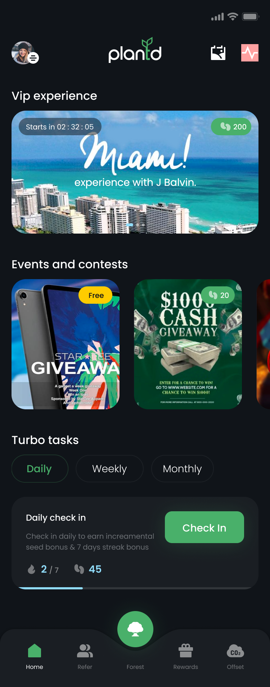
Winners, events and milestones flow through a feed that makes collective impact feel social, not solitary.
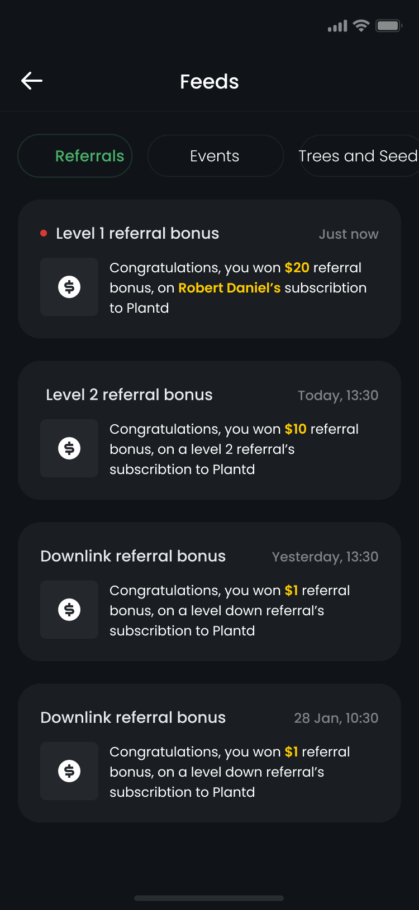
Seeds, trees, offsets and streaks live on a profile that doubles as a scoreboard you're proud of.
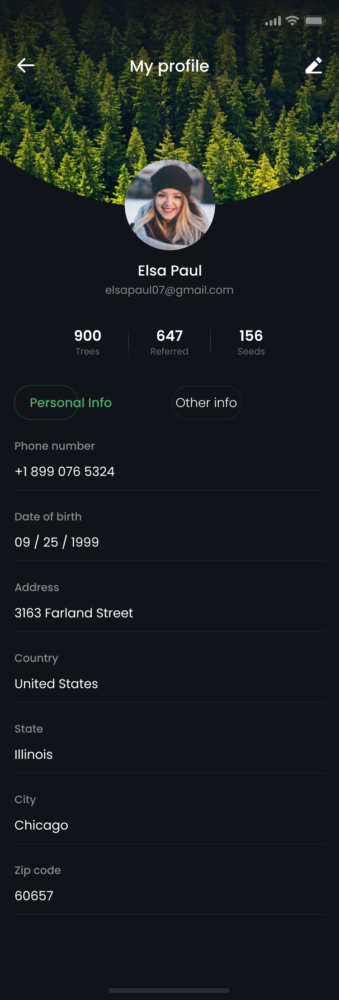
08 — Deep Dive · Virtual Forest
Seeds earned through check-ins and offsets become trees on an isometric plot that fills in over time.
Switch between your own forest and your team's — gentle competition via a leaderboard of planters.
A location toggle anchors virtual trees to real planting projects, closing the believability gap.
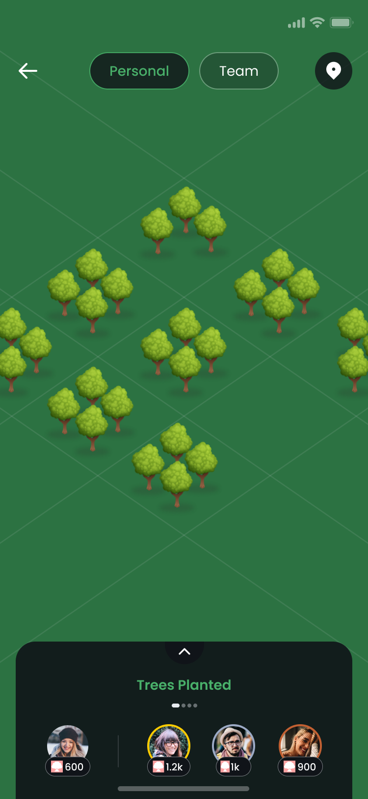
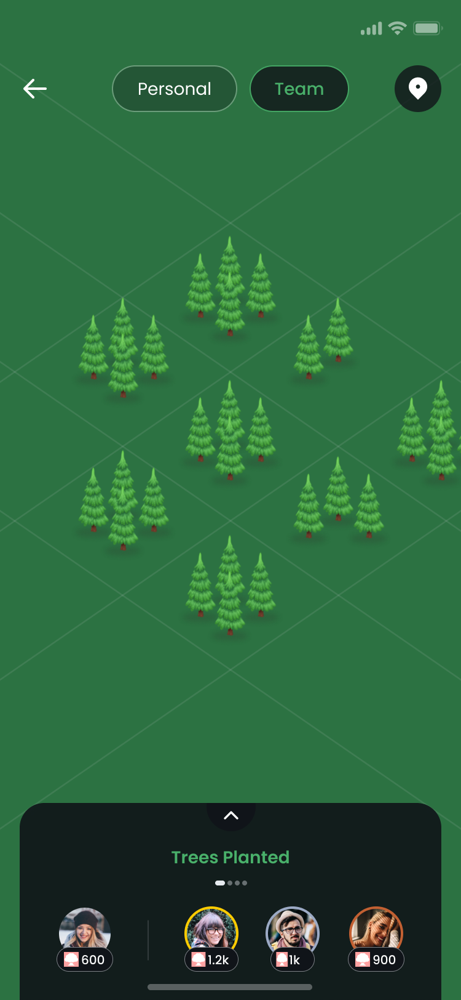
09 — Flow Spotlight · Offset
Energy, flights, mobility or a custom amount — each category asks only what it must, shows the tonnes in plain numbers, and ends at a real, named project.
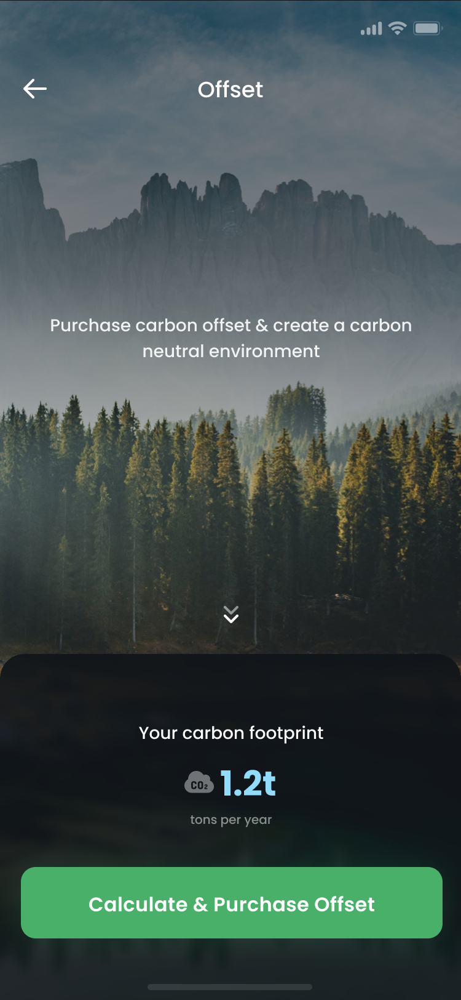
Your yearly tonnes, up front — no lecture attached.
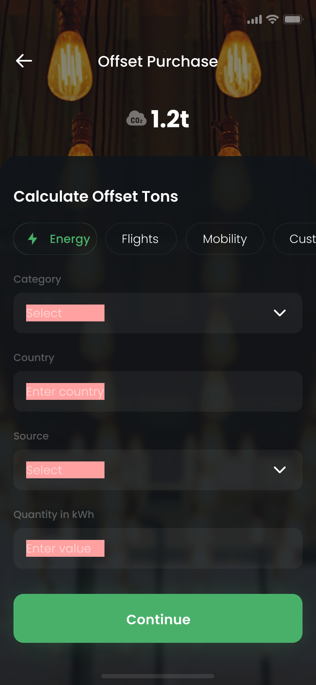
Energy, flights, mobility or custom — sliders, not spreadsheets.
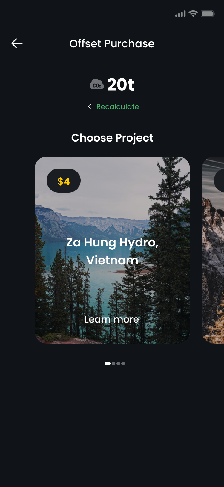
Verified planting and offset projects, each with a face and a place.
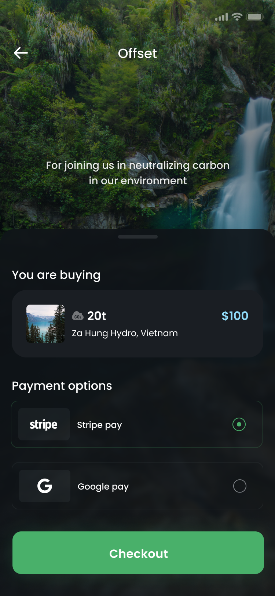
Saved cards or PayPal — then trees appear in your forest.
10 — Growth & Business
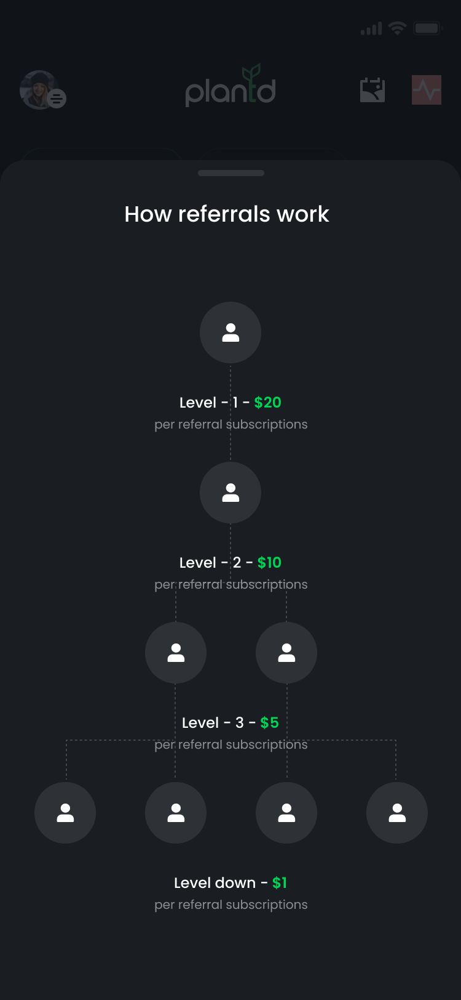
Referrals pay both sides in seeds — the growth loop is literally planted into the product.
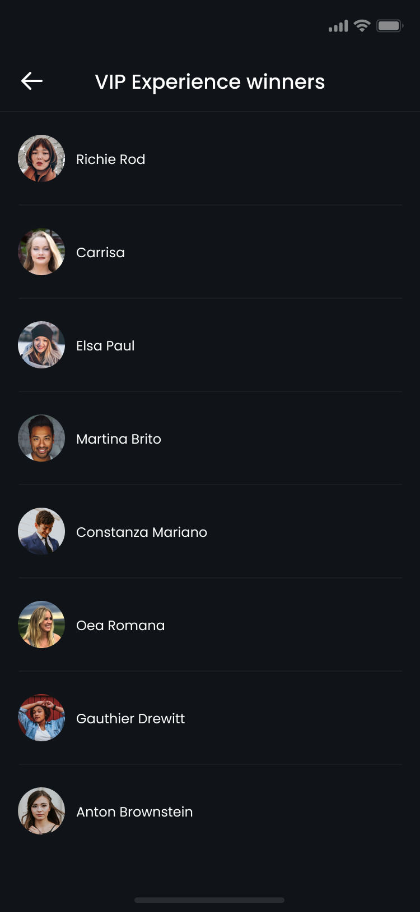
Winner lists and live contests give every campaign a scoreboard — and a reason to come back Friday.
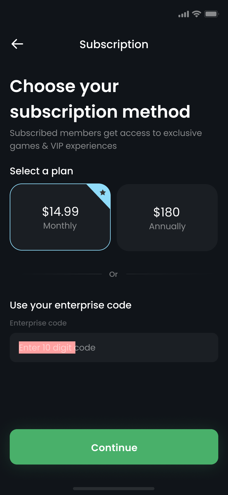
A simple subscription unlocks multipliers and VIP draws — revenue that scales with engagement, not ads.
11 — Outcomes
Illustrative metrics — swap in real figures once you have them.
Users still checking in a month after install.
The loop reads as routine, not chore.
Purchases per offsetting user in the first quarter.
Growth carried by the seed-sharing loop.
12 — Reflection
Designing 97 screens taught me where gamification earns its keep and where it becomes noise. The forest worked because it's honest — a visualisation of real actions — while badges we prototyped and cut felt like decoration. If a game mechanic doesn't map to something true, it dilutes the ones that do.
The dark UI was a risk for an outdoors brand, and the answer was photography and glow: let real forests carry the colour, and reserve the green for action. Restraint made the product feel premium — which, for a subscription business, is the difference between a cause and a product people pay for.